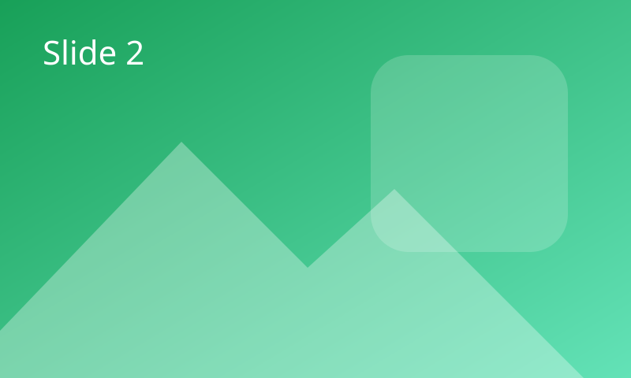
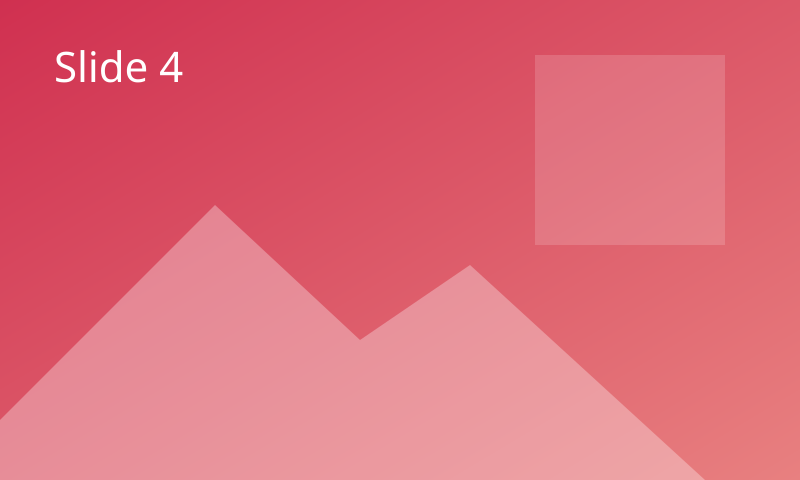

Carousel
Native scroll-snap carousels with authored slides, navigation and opt-in autoplay.
Setup code
<link rel="stylesheet" href="./dist/markup-ui-carousel.css">
<script defer src="./dist/markup-ui-core.global.js"></script>
<script defer src="./dist/markup-ui-carousel.global.js"></script>Basic
Native buttons select settled items without clones.

Arrow and boundaries
Loop is off. Focused boundary controls retain focus with aria-disabled.
Autoplay
Every 3 seconds when safe. Hover, focus, reduced motion and hidden context pause rotation.
Custom indicators and direction
This Web styling example uses application CSS for indicator shapes. Direction is a component property.
Vertical
Space between
A 20-unit gap separates full-view slides. Scroll or use the controls to move across it.
Hover indicators
Application listeners request a slide on pointer entry or indicator focus. This is not a Carousel option.
Keyboard and native inputs
Focus the viewport for arrows/Home/End. Input editing and form membership remain native.
Custom arrows and dots
This Web styling example customizes authored button labels and alignment, not Carousel behavior.

Readout, direct API and reconnect
Edit the input, navigate, reorder or detach/reconnect. Selected identity and input state are retained.
Not implemented
These are not Carousel features. They are listed separately rather than demonstrated with substitute HTML/CSS.
- Multiple slides per view: each Carousel item currently fills the viewport.
- Variable-width slides.
- Centered partial-width slides.
- Fade effects; only native sliding is supported.
- 3D or stacked-card effects.
- Named transitions or configurable animation durations.
smoothrequests browser animation. - Discrete wheel paging. Ordinary wheel and trackpad scrolling remain native.
- A custom mouse-drag engine. Touch scrolling and native scrollbars remain available.
API
Tables below load ../api/carousel.json, extracted from TypeScript without importing
or constructing components. No runtime metadata is used. The state and items
getters are live read-only values, not attribute configuration or invented default objects.
Loading API documentation…
Behavior, accessibility and lifecycle
Requested versus settled values
currentIndexreads the settled item. Its property/attribute writes request a clamped index; the attribute keeps the authored request and is not a two-way state mirror. Unrelated property changes never replay it. Reassigning the same property value issues a fresh request. Removing current-index clears the authored request without navigating; before first connection, its absence selects defaultIndex.- Before first connection, reads return the pending request or
defaultIndex. On first connection, current-index wins over default-index. Both accept safe integers. Empty collections settle at-1, with0 / 0readout. One item settles at zero and cannot rotate. to(index),previous()andnext()wrap only ifloopis true. Rapid commands use the pending target.reset()clamps defaultIndex and aligns instantly. Changing defaultIndex alone does not select it.m:current-changedis a bubbling, noncancelable, noncomposed settled notification. Frozen detail containsindex,previousIndex,item,previousItemand reasonapi | control | autoplay | scroll | refresh. Items are the actual HTMLElement references (or null). Initial alignment is silent; navigation and reset notify only when index or identity changes.statereturns a frozen snapshot: currentIndex, targetIndex (null when settled), defaultIndex, total, direction, playing, paused, pauseReasons, disabled and ready.pausedmeans explicit user pause, not every temporary safety pause. Setting other properties during a pending move may align it instantly, preserving its notification.
Content and identity
Author exactly one direct named m-carousel-viewport with a unique ID and tabindex="0",
zero or more direct m-carousel-item children, at most one direct
m-carousel-controls hidden, and exactly one separate plain-text
m-carousel-readout. Name the root with aria-label/aria-labelledby.
Nested Carousels and shadow-root hosting are not supported by this native renderer.
Controls are distinct labelled type="button" actions using owner-scoped
data-part="prev | next | to | toggle". A to button also needs a nonnegative safe decimal
data-index. Do not put nested interactive content, alternative roles or native popover/command
actions inside these buttons. Successful initialization reveals controls; without JS the viewport
still scrolls. Controls are optional unless autoplay is enabled.
After adding, removing, replacing or reordering items, call refresh().
Identity is preserved first by the original node, then by an optional unique nonempty
CarouselItem.key / key attribute. Otherwise the previous index is clamped to a neighbor.
Duplicate keys fail validation. No copies or virtual DOM are created. Replacing a viewport,
controls container or readout requires detaching and reconnecting the complete anatomy.
The renderer writes short data-part markers on root/regions, item data-index and item
data-state tokens current previous next. Root data-state contains direction and
applicable ready playing paused disabled pending tokens. Scope styling to the owning
Carousel and its direct regions; generic global data-part selectors can collide with other families.
Item index is -1 and current/previous/next are false outside an active owner.
Native interaction and safe rotation
The viewport owns only same-axis arrows, Home and End when directly focused. It respects RTL; input editing, cross-axis keys, modifiers, wheel/touch, focus and form membership remain native. Inactive items stay accessible and are never hidden, inert or aria-hidden. Disabled blocks commands, controls and settled tracking but does not disable content or prevent native scrolling. Requests made while disabled are ignored, not replayed on enabling.
Autoplay is opt-in and requires an available labelled toggle button.
Interval is an integer from 1000 to 2147483647 milliseconds, measured after completion.
pause() and the toggle retain explicit pause; play() clears it but does not
enable autoplay or bypass safety checks. Pauses include hover, focus, document-hidden, reduced-motion,
scroll/interaction, insufficient-slides, non-loop boundary, unavailable rotation-control, layout and disabled.
Missing matchMedia is treated conservatively as reduced motion. Readout announcements are off during
enabled, non-user-paused rotation; otherwise only the readout is polite, never slide content.
Spacing and layout
gap is a finite, nonnegative spacing value with a default of zero. Logical units map
to CSS pixels on Web. It controls the space between full-view items, not the number of visible slides.
Fractional values are allowed. Changing gap realigns the settled or pending item without replaying a
stale current-index attribute or announcing an unchanged selection. Removing the attribute restores zero.
The renderer owns the viewport's CSS gap while connected and restores its prior value on disconnect,
unless the application has since changed it. Set spacing through Carousel.gap, not a demo class.
Use equal-size one-view items and horizontal-tb writing mode. Layout that is hidden,
zero-sized, inside closed details or otherwise unsupported suspends commands/autoplay until realignment.
Reduced motion disables autoplay and makes manual movement instant. ResizeObserver (or window resize
fallback) realigns without duplicating settled notifications. Scrollend has a quiet-event debounce fallback.
Disconnect and reconnect
Disconnect cancels timers, observers, listeners and movement; owned ARIA/state/readout/control writes are restored without overwriting later application edits. Reconnect keeps the last settled node/key/index and explicit pause, not an abandoned target or stale attribute. A currentIndex write while disconnected overrides the retained position. Actions, state and items require a connected controller; currentIndex retains its last settled value while detached. Reconnect the same nodes to preserve edited inputs and listeners.